Joker Aschoff sticht: Papst-Elf schraubt die Serie auf drei Siege
Unsere Zweite bleibt im Lauf. Gegen die SG TSV 1861 Bad Tennstedt setzten sich die Blau-Weißen am neunten Spieltag der Kreisoberliga mit 3:0 durch, nachdem es zur Pause noch torlos gestanden hatte. Drei Tore in der zweiten Hälfte, ein Joker mit perfektem Timing: Der Sonntagnachmittag auf dem Kunstrasen am Leineberg hatte vieles, was ein Fußballnachmittag haben sollte.
Geduldsprobe vor der Pause
Wer nach dem 9:2 in Birkungen eine Woche zuvor wieder ein Torfestival erwartet hatte, musste sich gedulden. Die erste Halbzeit blieb ohne Treffer, und die beste Offensive der Liga fand gegen kompakte Gäste aus dem Unstrut-Hainich-Kreis keinen Weg zum Tor. Bad Tennstedt war mit Rückenwind angereist, hatte das letzte Spiel gewonnen und verteidigte entsprechend selbstbewusst.
Ein Eigentor öffnet die Tür
Nach 55 Minuten kippte die Begegnung. Nach einer Eingabe von Jagar Jargees Ali lenkte Tom Braun den Ball ins eigene Netz, und plötzlich lag der SCH vorn. Ein Treffer genau zum richtigen Zeitpunkt. Bad Tennstedt musste nun reagieren.
Sechs Minuten bis zum Jubel
Trainer Daniel Papst griff ein. In der 73. Minute schickte er Adam Aschoff für Paul Opfermann aufs Feld, und die Einwechslung zahlte sich schneller aus, als man es planen kann. Sechs Minuten nach seiner Hereinnahme traf Aschoff zum 2:0 (79.) und nahm damit viel Druck aus der Partie. Mit dem zweiten Treffer im Rücken spielten die Blau-Weißen die Begegnung kontrolliert herunter. Den Schlusspunkt setzte Marcel Hanusch in der Nachspielzeit: Sein Treffer zum 3:0 (90.+1) machte den Erfolg auch in der Höhe deutlich.
Die Null steht, die Serie lebt
Neben den drei Toren gehört die Defensive zu den Gewinnern des Tages. Torhüter Jonas Lerch und seine Vorderleute ließen keinen Gegentreffer zu, nach den torreichen Wochen zuvor ein schönes Signal. Zwar brauchte die Mannschaft um Kapitän Paul Weilandt eine Halbzeit, um ins Rollen zu kommen. Doch als der Knoten geplatzt war, ließ sie sich die drei Punkte nicht mehr nehmen. Drei Siege in Folge stehen nun zu Buche.
Auswärts in Mühlhausen
Am kommenden Sonntag, 1. November, reist der SCH zum FC Union Mühlhausen II. Anstoß ist um 14:00 Uhr. Die Blau-Weißen wollen dort die Serie fortsetzen und ihren Platz in der Spitzengruppe festigen.
Spieldaten
1. SC 1911 Heiligenstadt II – SG TSV 1861 Bad Tennstedt 3:0 (0:0)
SC 1911 Heiligenstadt II Lerch – Kaufhold – Wibe – Weilandt – Semper – Weidemann – Opfermann (73. Aschoff) – Schäfer – Kahlmeyer – Jargees Ali (83. Rasho) – Hanusch
SG TSV 1861 Bad Tennstedt
Zier – Thomas – Wawrzik (69. Mihalea) – Braun – Högler – Biedermann – Grube – Kammlott (62. Kutschke) – Naumann – Eobaldt – Rahaus
Schiedsrichter
Redemann
Zuschauerzahl
35
Tore
1:0 Braun (55. ET), 2:0 Aschoff (79.), 3:0 Hanusch (90.+1)
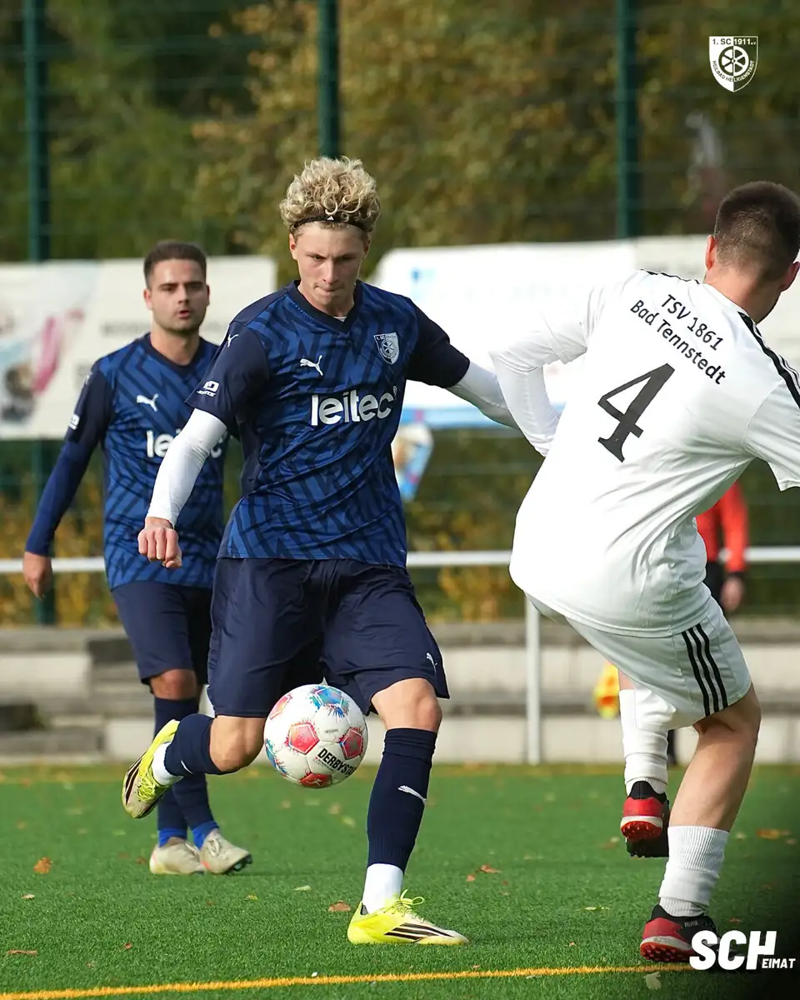
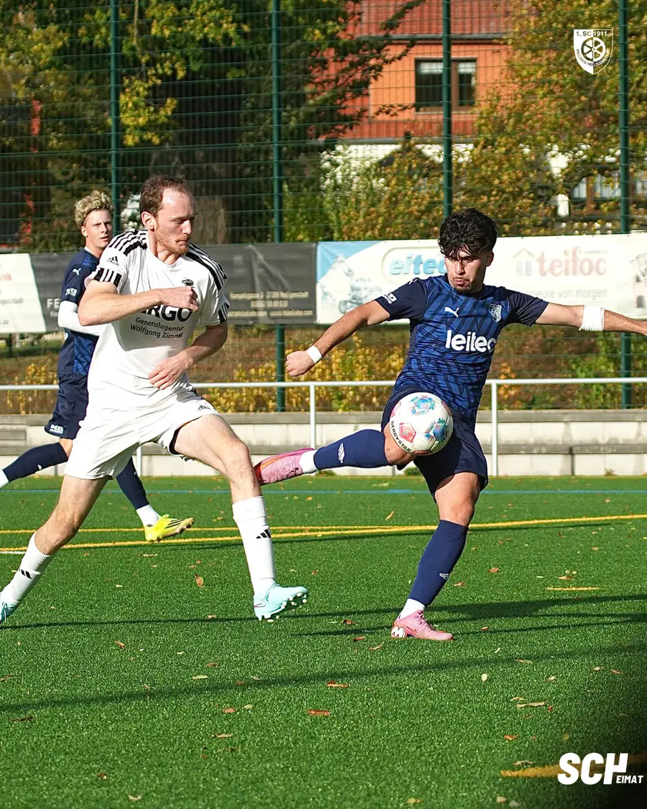
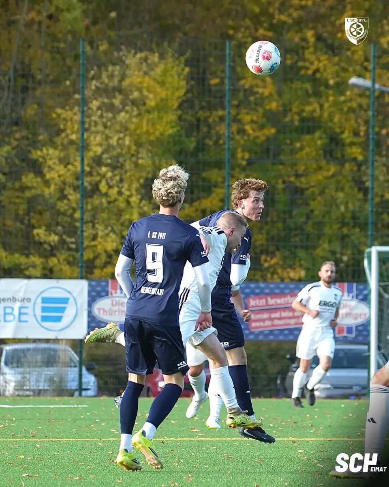
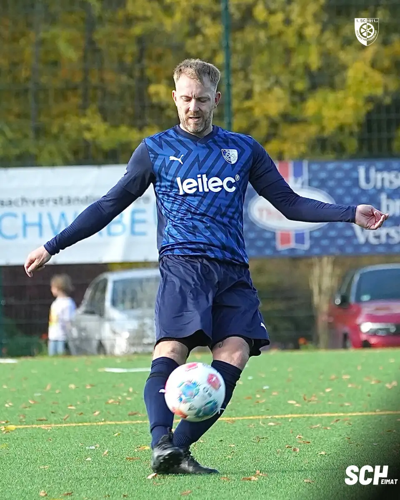
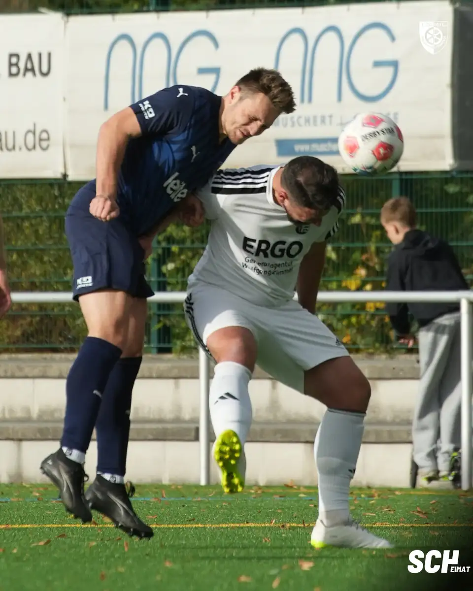
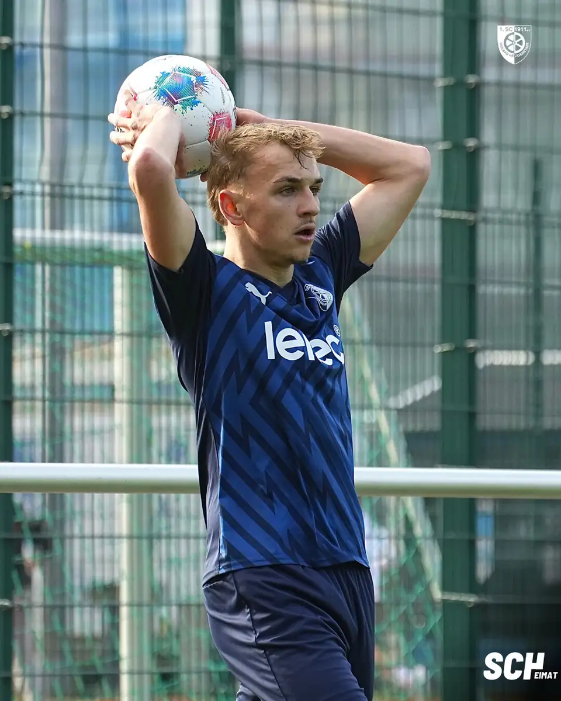
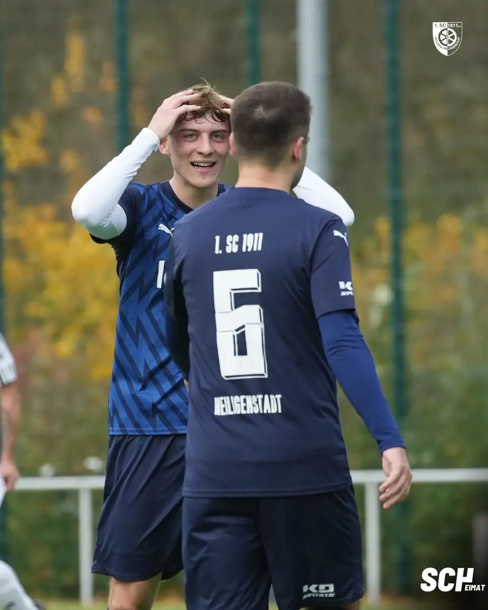
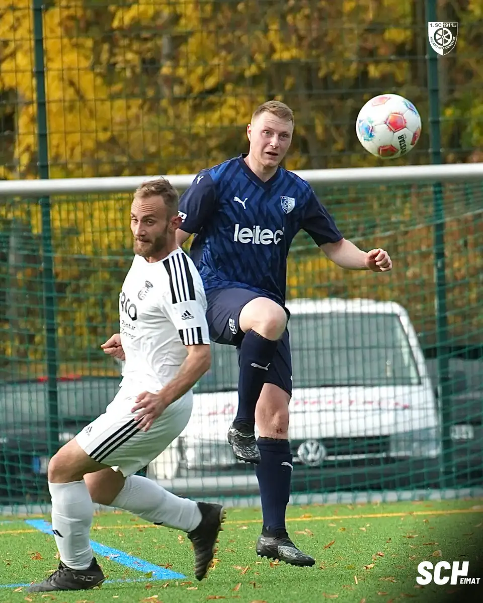
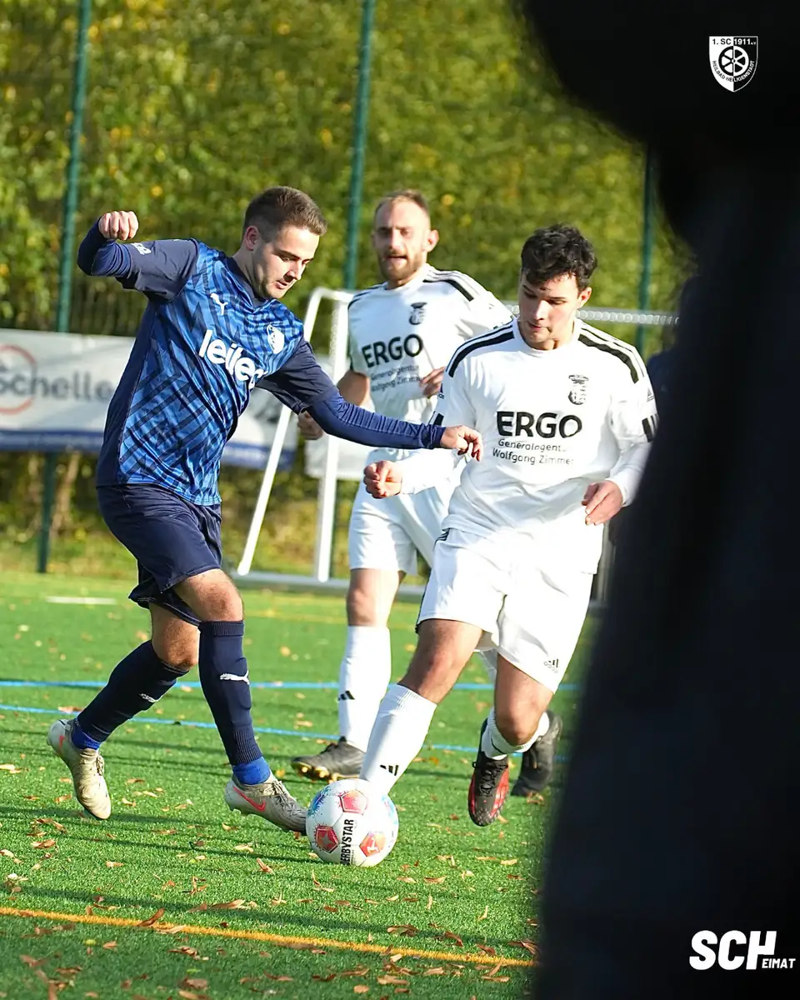
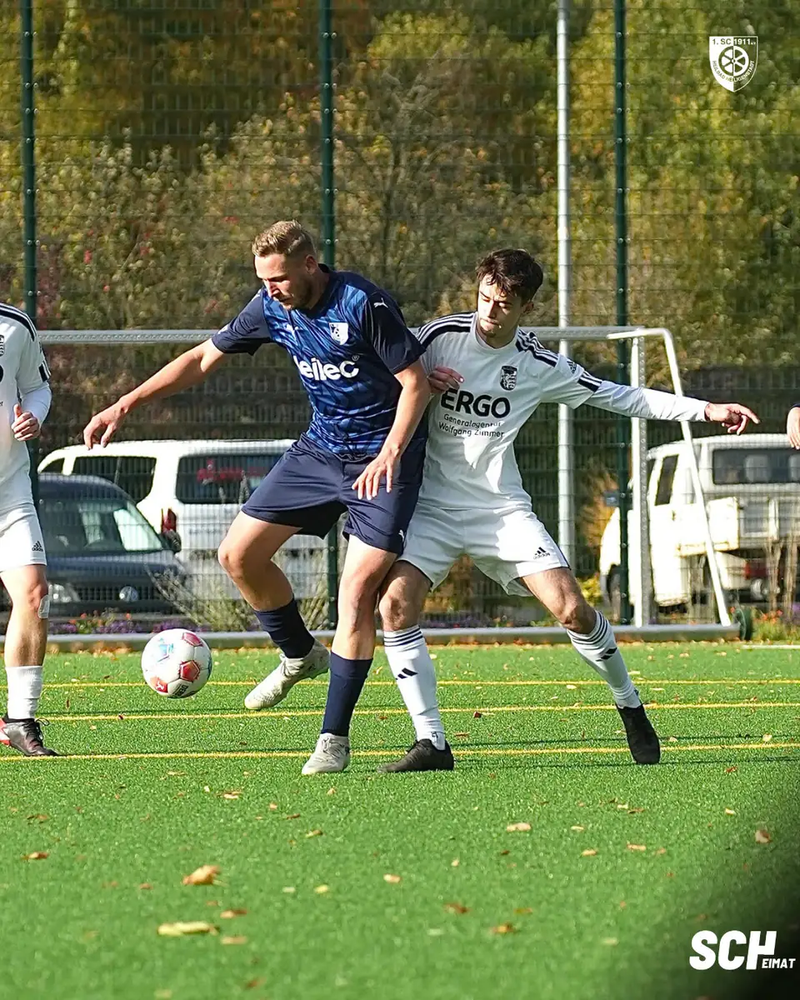
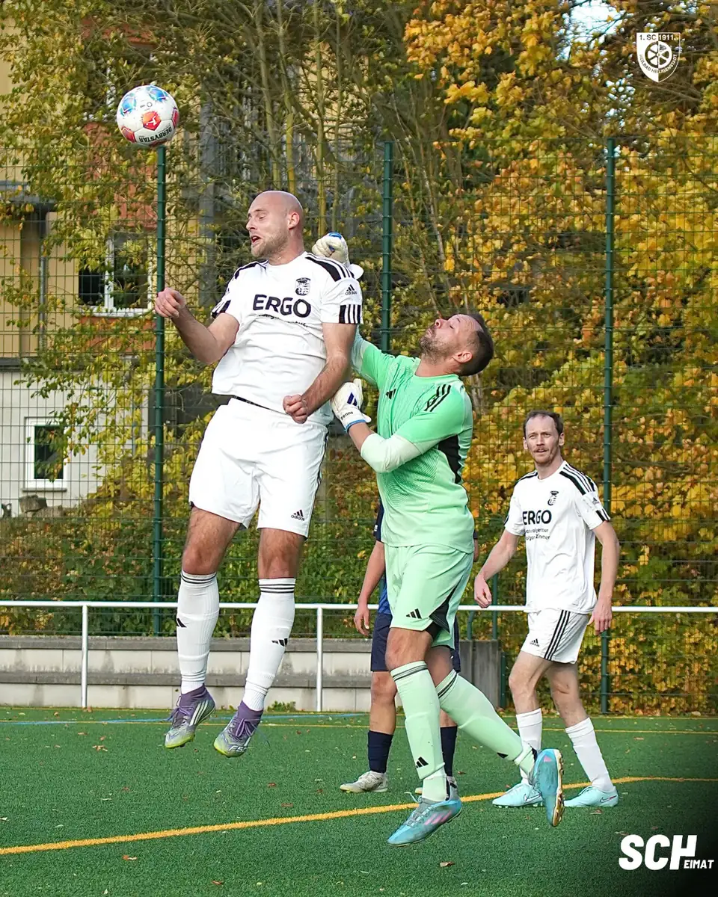